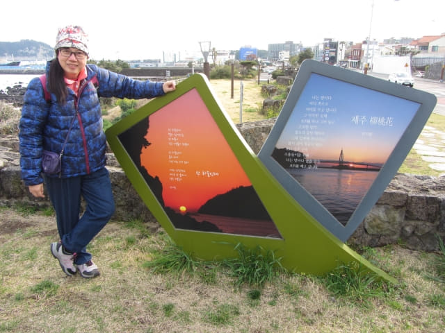

沿西歸浦港走了約二十五分鐘,在一個分叉路口轉左往上走, 經過機場巴士600號的西歸浦港(서귀포항)巴士站, 繼續往上走一會, 看見馬路對面的海邊有一個大草坪, 好像是一個公園, 環境十分優美, 便馬上走過馬路。這裡便是子古里文化藝術公園 (자구리문화예술공원), 不經不覺來到了子古里。
走進公園。
突然間, 海上的天空烏雲密佈, 但頭上正瀉下一道金光, 把這片草坪照得光亮! 在濟州島每天都密雲下雨, 很久沒看到陽光啦! 想不到竟然會那麼高漲!

海岸風光。
公園內的藝術作品。
接著沿海邊木棧道走。
遠眺正房瀑布 (정방폭포 Jeongbang Waterfall)
前面海灣的懸崖很險要, 很美。
Hm…. 懸崖上好像有一點點的物體不斷的移動。拉近看看, 原來懸崖中有一條樓梯, 很多人正在上上落落, 莫非那裡便是正房瀑布? 嘩! 那麼多人的!
繼續沿子古里文化藝術公園走。
公園內的藝術作品。

繼續沿子古里文化藝術公園走, 風景真是很美。
來到一個懸崖上的涼亭, 放眼遠望, 令人心曠神怡, 什麼疲勞也沒有了!
在涼亭休息了一會, 離開, 繼續向前走。來到公園的另一邊, 看見有一條幽深小徑通往山坡上, 便獨自走去看看。
山坡上有一個涼亭, 可眺望森島和海灣的懸崖。
七十里特色餐飲一條街出入口牌樓
離開公園, 繼續往上往一會, 這裡便是七十里特色餐飲一條街 (칠십리음식특화거리)山上出入口的牌樓, 剛好把整條餐飲街走完。
再向前走一會, 終於看到徐福公園入口的牌樓。